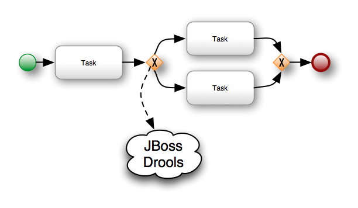
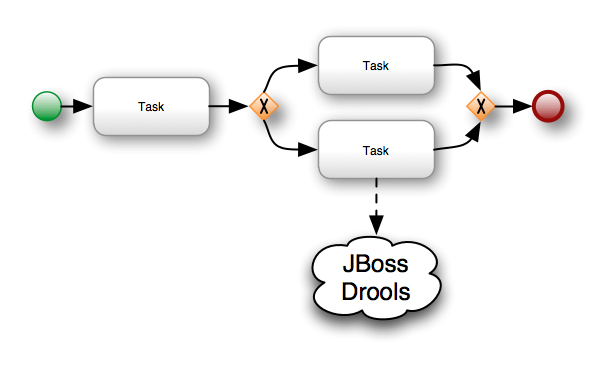
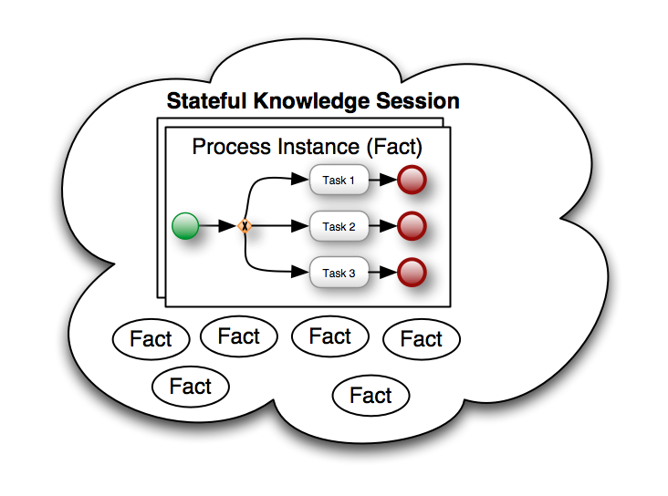
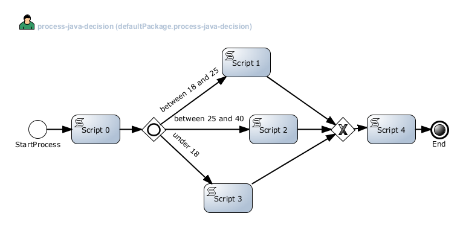
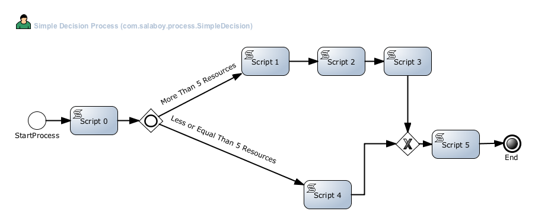

(Processes & Rules) or (Rules & Processes) 1/X
One of the things that differentiate jBPM5 from other BPMS is the fact that it runs on top of the Drools Rule engine. During a series of post I will be trying to share some of the advantages of this approach. Because this topic is heavily discussed inside Chapter 9 of the jBPM5 Developer Guide which will be published soon, I will try to use this post to gather feedback about what people expect or know about these features inside jBPM5 and Drools.
Old School Integration
For years and years the integration between BPM Systems and Rule Engines were limited to very simple stateless interactions. The most popular examples that we can find about this very simple integrations are:
- Decision Points Pattern

- Decision Point
- Data Validations/Enrichments Task Pattern

- Data Validation, Data Enrichment, Consistency Checks
*JBoss Drools –> Rule Engine (www.drools.org)In both cases we can find the following characteristics:
- Stateless Interaction with the Rule Engine (One Shot)
- We need to move the information between the Process Engine context to the Rule Engine context
- We will probably need to adapt the information structure to work well in both environments
These three characteristics are OK but they just use 1% of the Rule Engine Power. Let’s see what we can do if we take advantage of the fact that we have a Rule Engine for free when we use jBPM5.
jBPM5 and Drools Integration Patterns
This section shows some integration patterns that we can implement using more features of the Rule Engine. In no way these patterns are the only ones that can be implemented but I’m just showing a random set of them for inspiring you to create new ones based on your needs. This patterns will serve as the basis for more advanced patterns that I will be sharing in future post which are also detailed inside the jBPM5 Developer Guide.
Contextual Decisions
In jBPM5 we can use the DRL language to define the conditions that needs to be evaluated inside a gateway. When we see this for the first time it looks like the old “Decision Points Pattern” introduced in the previous section, but it’s not.
- Contextual Based Decisions Pattern

- Decisions Based on Context
If we use the DRL syntax to write XOR gateways conditions we can decide not only based on process variables, we can make decisions based on the session context that we have available. This flexibility open a very useful set of patterns that can be written to leverage this feature. When we use the DRL language to express conditions in each of the outgoing sequence flows in the XOR gateway we are filtering the facts available inside the Stateful Knowledge Session, so for example:
<br /><br /> Person( age < 18 && > 25)<br /><br /> Person( age > 25 && < 40 )<br /><br /> Person( age < 18 )<br /><br />Looking at this example, we are not filtering the information that is inside the Process, we are checking the available facts in the context to make a decision inside our business process. If we want to analyze process variables using the DRL syntax we have two requirements. First of all, we need to make the ProcessInstance available as a Fact inside the Rule Engine, and then we can use the following DRL snippet to evaluate the process variables:
<br /><br />WorkFlowProcessInstance( $person: variables[“person”])<br /><br />Person( age < 18 ) from $person<br /><br />Obviously we can also mix the evaluation of the Process Variables with Facts inside the Knowledge Session giving us the ultimate flexibility. This example just show the basics, in order to understand what can be done you need to play with it and try to map your own scenarios to use these mechanisms. You can see the example how everything is glued together in my github repo: https://github.com/Salaboy/jBPM5-Developer-Guide/blob/master/chapter_09/jBPM5-Process-Rules-Patterns/src/test/java/com/salaboy/jbpm5/JBPM5ProcessAndRulesIntegrationPatternsTest.java That test uses the process-drl-decision.bpmn process that you can open with the process designer provided by the jBPM installer.

- DRL Decision Process
- Multi Process Instance Evaluations Pattern
This pattern will be used to make decisions in different instances of the same process based on shared common data. We will see how we can control and affect processes executions based on facts available inside the session. This example will be used to demonstrate more advanced patterns in the future. The process that we will be using here looks like:

- Multi Process Instance Decision
In this case our process have 2 paths that will consume different amounts of Resources. Based on the available resources on runtime the XOR gateway will decide which path will be selected. If each task consume 1 unit of the available resources we can say that Path 1 will consume 5 (5 task needs to be executed) and Path 2 will consume just 3 units. If the process is related to a customer relationship process, we can say that some customers will require more attention than others. The most basic way of handling resources for these kind of scenarios is to say that we will always execute Path 1 unless we are out of resources. In that situation we will choose Path 2, because we don’t have enough resources to go through Path 1. This example shows how we can control multiple instances of the same process running in the same context, which is extremely useful to add environmental restrictions about the resources (in the generic sense) that will be required by our business processes. You can take a look at the example provided in this tests which runs this scenario with 50 units to demonstrate how the global rule will kick in as soon as we are out of resources. Check the test class: https://github.com/Salaboy/jBPM5-Developer-Guide/blob/master/chapter_09/jBPM5-Process-Rules-Patterns/src/test/java/com/salaboy/jbpm5/MultiEvaluationProcessAndRulesTest.java The Process File (BPMN2): https://github.com/Salaboy/jBPM5-Developer-Guide/blob/master/chapter_09/jBPM5-Process-Rules-Patterns/src/main/resources/multi-process-decision.bpmn The rules file (DRL): https://github.com/Salaboy/jBPM5-Developer-Guide/blob/master/chapter_09/jBPM5-Process-Rules-Patterns/src/main/resources/resources.drl
Summary
The following post will show more advanced patterns which can easily create using jBPM5. From the architectural perspective of our applications we also need to analyze how these patterns can help us to solve recurrent problems which complicates our models when we use traditional approaches. The idea of breaking different solutions into patterns will help to make reference them and to build on top of them different solutions to different business scenarios.Once we master the integration between processes and rules we can start including events (CEP – Drools Fusion) into the picture.Feel free to write back in the mean time, if you are already experimenting with this kind of topics. Most of the examples that can be found inside the GitHub repo are more advanced that the one presented here, but we need to have the foundations first in order to understand how things work together.Author

{kind=link}
{kind=link}
{kind=link}
{kind=link}
{kind=link}